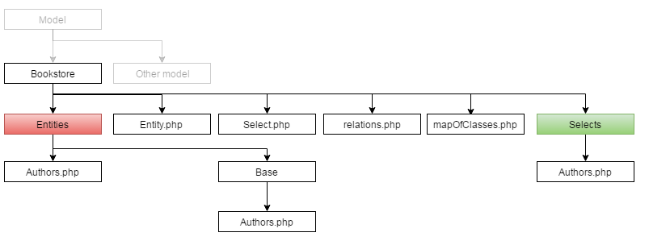

Then follow the script that creates a database
bookstore.sql.
Connection Setup
Open file ../config/juborm.xml, and at node
"source" enter your own configurations.
mysqllocalhostbookstoreroot
Create entities
The basic concept is a model. The model is an ordered structure of files, where
each file full a role. In Juborm file structure is as follows.

Bookstore This is the primary directory
for the model. Of course, the same level can operate other
models that do not use Juborm .
Entities It contains all the classes that
represent the database tables . Querying the database is
done through these classes. These classes also play roles
of Active Record
Base it contains generated entities which
contain basic information about the tables , such as
columns , primary keys etc. These files are generated so
you should not make any modifications . Changes should be
made to entities have directory Entities
Selects contains classes that are
responsible for creating queries. Each of these classes
must point to the corresponding class of entities.
Entity.php, Select.php these are the basic
classes which are extended by class specific.
relations.php it defines the relationship
between the entities . Using this file, you can create more
complex relationships than those based on foreign mares .
mapOfClasses.php It contains information
about how tables are projected onto objects . This file
with relations.php allows you to create more
complex relationships between tables .
All these files can be created automatically by using the
wizard; Of course you can create them manually.
juborm generateModel -m bookstore -e production --config "../config/juborm.xml";
juborm generateRelationsTree -m bookstore -e production --config "../config/juborm.xml";
If all goes well , a directory Bookstore should be created
above described files .
The last step is to load the configuration file.
use Jub\ORM\ORM;
$config = ORM::service('config');
$config->load('../config/juborm.xml', 'production');
For testing purposes, you can use a file that contains
examples.php autoload and loaded connection.
Just run
php examples.php
And change the content of examples, to check how does it
works.
Building queries
Juborm provides a number of methods that support the creation
of queries. Below is an example.
use Jub\ORM\ORM;
use Bookstore\Model\Bookstore\Entities\Authors;
// create select for "authors" table
$select = Authors::select();
$select->column("CONCAT(authors.first_name, ' ', authors.last_name)", 'fullName');
$select->equal('first_name', 'Matthew');
$select->like('last_name', 'Normani');
$select->startWith('last_name', 'N');
$select->endWith('last_name', 'i');
$select->contains('last_name', 'ma');
// author_id in(2)
$select->in('author_id', array(2));
// this will be automaticly replace to "1=2"
$select->in('author_id', array());
// use sub select as condition
$subSelect = Authors::select('author_id');
$subSelect->in('author_id', array(2));
$select->in('author_id', $subSelect);
// use expr to write complex condition
$select->expr('author_id = :idA: OR author_id = :idB:');
$select->bind('idA', 1);
$select->bind('idB', 'T');
The result will be the following query.
SELECT
-- These are the basis for the columns added on the basis of the definition
-- of entities.
(authors.author_id) as author_id,
(authors.first_name) as first_name,
(authors.last_name) as last_name,
(authors.birth_date) as birth_date,
-- $select->column("CONCAT(authors.first_name, ' ', authors.last_name)", 'fullName');
(CONCAT(authors.first_name, ' ', authors.last_name)) as fullName
FROM authors
WHERE
-- $select->equal('first_name', 'Matthew');
authors.first_name = 'Matthew'
-- $select->like('last_name', 'Normani');
AND authors.last_name like 'Normani'
-- $select->startWith('last_name', 'N');
AND authors.last_name like 'N%'
-- $select->endWith('last_name', 'i');
AND authors.last_name like '%i'
-- $select->contains('last_name', 'ma');
AND authors.last_name like '%ma%'
-- $select->in('author_id', array(2));
AND authors.author_id in(2)
-- $select->in('author_id', array());
AND 1=2
-- $subSelect = Authors::select('author_id');
-- $subSelect->in('author_id', array(2));
-- $select->in('author_id', $subSelect);
AND authors.author_id in(
SELECT
(authors.author_id) as author_id
FROM authors
WHERE authors.author_id in(2)
)
-- $select->expr('author_id = :idA: OR author_id = :idB:');
-- $select->bind('idA', 1);
-- $select->bind('idB', 'T');
AND author_id = 1 OR author_id = 'T'
Parentheses
Parentheses is the mechanism used when building queries , it allows
you to create a more universal code
$select = Authors::select();
$subSelect = Authors::select('author_id');
$subSelect->in('author_id', array(3));
$select->brackets(function($select) use ($subSelect){
// set at brackets is OR operator
$select->orOperator();
$select->in('author_id', $subSelect);
$select->brackets(function($select){
$select
->equal('first_name', 'Roji')
->contains('first_name', 'a')
;
});
$select->brackets(function($select){
$select->equal('last_name', 'Normani');
});
});
The result will be the following query.
SELECT
(authors.author_id) as author_id,
(authors.first_name) as first_name,
(authors.last_name) as last_name,
(authors.birth_date) as birth_date
FROM authors
-- first brackets with OR operator
WHERE (
authors.author_id in(
SELECT
(authors.author_id) as author_id
FROM authors
WHERE authors.author_id in(3)
)
OR (
-- subbrackets, brackets create some new scope, so we have AND operator
-- here
authors.first_name = 'Roji'
AND authors.first_name like '%a%'
)
-- $select->brackets(function($select){
-- $select->equal('last_name', 'Normani');
-- });
OR (authors.last_name = 'Normani')
)
Joins
Also, build queries with connections in a simplified.
$select = Authors::select();
// you can only give column name to join
$select->innerJoin('books_authors', "author_id");
// automaticly add column during join
$select->leftJoin('books', "book_id", array('bookName' => 'books.name'));
// joins with table alias, plus condition as list of column
$select->rightJoin(array('o' => 'books_opinions'), array("book_id"), array(
'o.opinion',
'authorOfOpinion' => 'o.author',
));
// add column
$select->column('o.book_id', 'opinionBookId');
// set order
$select->order('authors.first_name');
$result = $select->fetchAll();
SELECT
-- base column from entity definition
(authors.author_id) as author_id,
(authors.first_name) as first_name,
(authors.last_name) as last_name,
(authors.birth_date) as birth_date,
-- $select->leftJoin('books', "book_id", array('bookName' => 'books.name'));
(books.name) as bookName,
-- $select->rightJoin(array('o' => 'books_opinions'), array("book_id") ...
(o.opinion) as opinion,
(o.author) as authorOfOpinion,
-- $select->column('o.book_id', 'opinionBookId');
(o.book_id) as opinionBookId
FROM authors
-- $select->innerJoin('books_authors', "author_id");
INNER JOIN books_authors on books_authors.author_id = authors.author_id
-- $select->leftJoin('books', "book_id", array('bookName' => 'books.name'));
LEFT JOIN books on books.book_id = books_authors.book_id
-- $select->rightJoin(array('o' => 'books_opinions'), array("book_id") ...
RIGHT JOIN books_opinions as o on o.book_id = books.book_id
-- $select->order('authors.first_name');
ORDER BY authors.first_name ASC
Relation joins
This mechanism is designed to accelerate the building of long
queries with lots of joins . Imagine that we have the structure
of connections between tables and we want to get a list of all
the opinions that have been issued to the author.
To obtain the opinions of the author we must perform three
additional join . With relationJoins it is much simpler and
faster .
Sql will automatically be built on the basis of the
generated inwards relationship.
SELECT
(authors.author_id) as author_id,
(authors.first_name) as first_name,
(authors.last_name) as last_name,
(authors.birth_date) as birth_date
FROM authors
INNER JOIN books_authors on books_authors.author_id = authors.author_id
INNER JOIN books on books_authors.book_id = books.book_id
INNER JOIN books_opinions on books_opinions.book_id = books.book_id
In the same way we can connect authors with warehouses .
This mechanism is also available from the entity (go to the
chapter Active Record). So in a fairly rapid manner , you can
delete dependent rows , or quickly build a query that returns
the information. Below is an example.
// Authors entity
namespace Bookstore\Model\Bookstore\Entities;
class Authors extends \Bookstore\Model\Bookstore\Entities\Base\Authors
{
public function opinionsOfBook($bookId)
{
$select = $this->relation('books_opinions');
$select->equal('book_id', $bookId);
return $select;
}
public function delete()
{
// we remove all opinions before delete Author
$this->relation('books_opinions')->all()->delete();
parent::delete();
}
}
The first four methods are probably familiar . The next two are
already interesting . All - returns a collection containing all
the entities . First - returns the first entity from the query.
Active record
It is implemented by classes of entities. Below is an example of modification , deletion and creation.
// operations on entity
$author1 = Authors::select()
->equal('author_id', 1)
->first()
;
$author1->set('first_name', 'John');
// UPDATE
$author1->save();
// DELETE
$author1->delete();
$authorNew = Authors::fetchNew();
$authorNew->set('first_name', 'John');
$authorNew->set('last_name', 'Matthew');
// INSERT
$authorNew->save();
// Collection
$authors = Authors::select()
->order('authors.author_id', 'DESC')
->all()
;
foreach ($authors as $author) {
$authorNew->set('first_name', 'John');
$authors->save();
}
// or short
$authors->set('first_name', 'John')->save();
// or delete all authors
$authors->delete();
Summary
The above introduction is only a brief description of the
possibilities of the library (full documentation is in progress
, due to lack of time , it may take a little ) . A large number
of solutions is not described here , unfortunately . So if you
liked this approach and would like to join this project , I
invite you to my GIT .